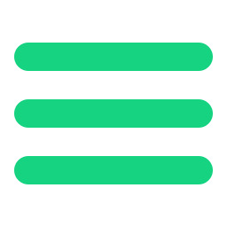
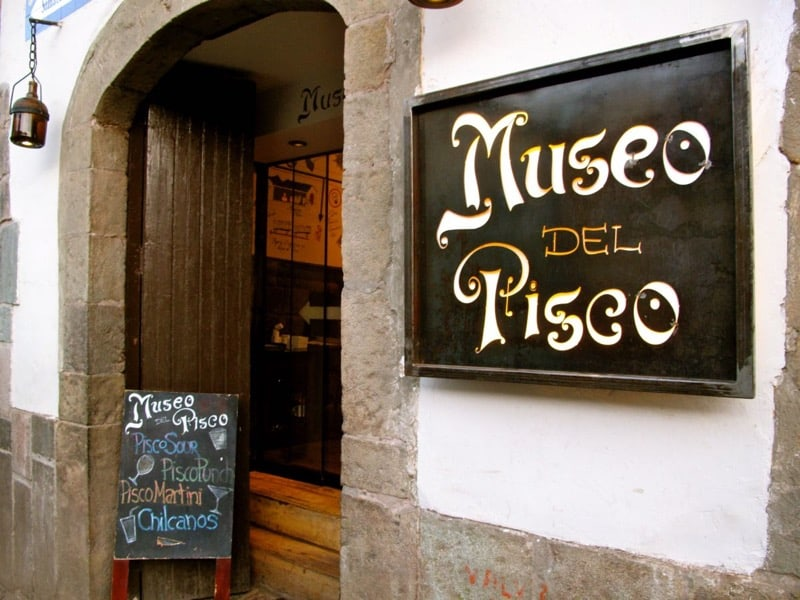
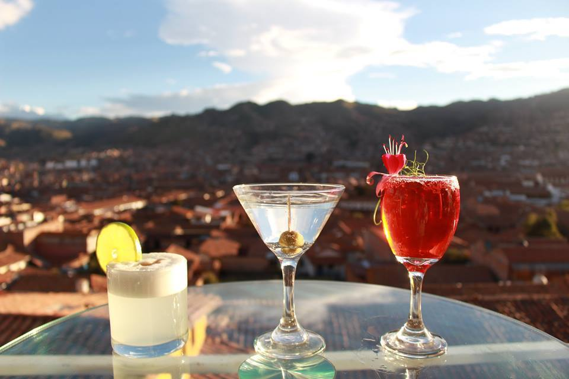
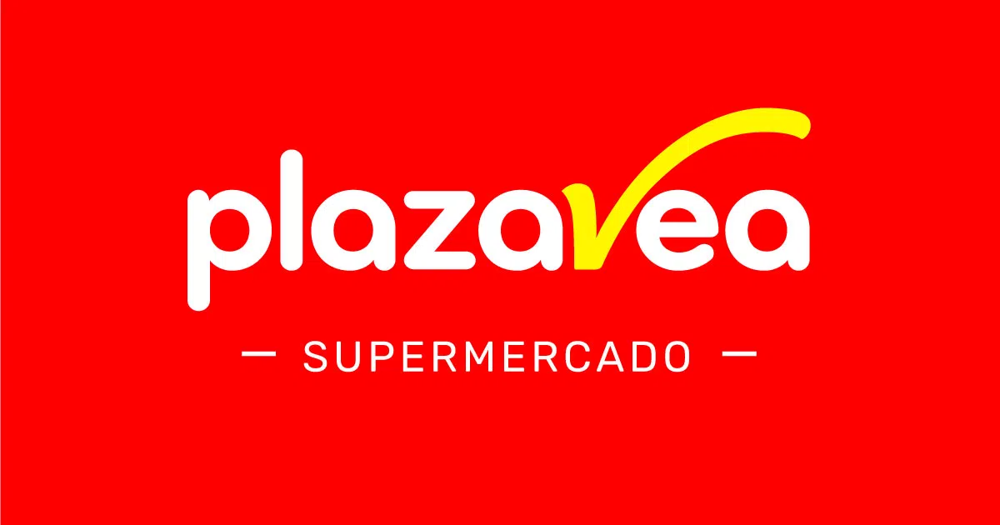
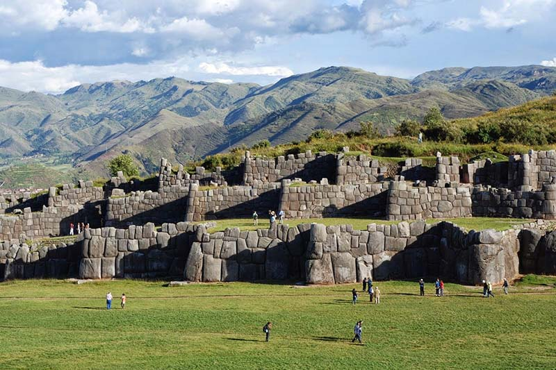
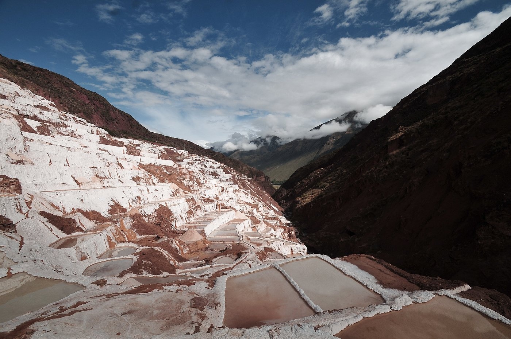

LUGARES CERCANOS
APPS
LUGARES PARA VISITAR
CONTACTO
¡Bienvenido a la ciudad del Cusco!
La información que necesitas en un solo lugar!
Lugares Cercanos
Ver todo

Museo del Pisco
Disfruta de los platos y bebidas tradicionales peruanos en un...
Ver más
Starbucks
Una buena opción para descansar y disfrutar de un buen café peruano...
Ver más

Limbus
Limbus dispone de la mejor vista panorámica de la capital imperial...
Ver más
Maná Restobar
Maná café restobar tiene la mejor comida, los mejores cocteles y...
Ver más

Plaza Vea
Plaza Vea es uno de los lideres del mercado de supermercados...
Ver más
Orion
Orion ofrece al público una gran variedad, bajos precios...
Ver más
Real Plaza
Real Plaza es uno de los centros comerciale mas grandes...
Ver más
Mercado Rosaspata
Rosaspata es un mercado ubicado cerca del Centro Histórico
Ver más
Apps de comida y taxi
Ver todo
PedidosYa
Pide a los mejores restaurantes, haz el pedido del súper...
Ver más
Rappi
Tus restaurantes favoritos en minutos, porque tu comida...
Ver más
Uber
Con Uber, tienes tu destino al alcance de la mano. Solo tienes que...
Ver más
InDrive
Como pasajero, siempre podrás encontrar servicios de viaje de...
Ver más
Lugares para visitar
Ver todo
Plaza de Armas
La Plaza de Armas es uno de los principales atractivos turísticos...
Ver más

Saqsayhuaman
Sacsayhuaman ofrece una asombrosa vista del Cusco...
Ver más
Moray
El conjunto de andenes que conforman Moray son visualmente bellos...
Ver más
Vinicunca
La montaña de los 7 Colores o también llamado Vinicunca es...
Ver más
Laguna Humantay
Humantay es considerada una de las más bellas y sagradas...
Ver más

Salineras de Maras
Las Salineras de Maras lo conforman más de 3 mil pozos de sal natural
Ver más
Ollantaytambo
Ollantaytambo es uno de los pueblos más importantes del Valle...
Ver más
MachuPicchu
Machu Picchu es una de las 7 maravillas del mundo moderno...
Ver más